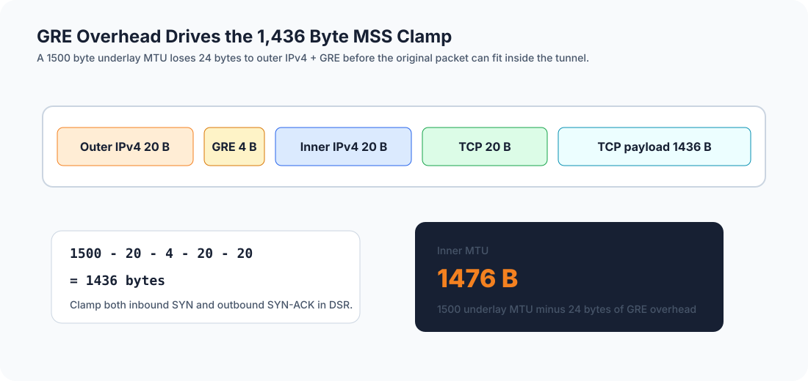
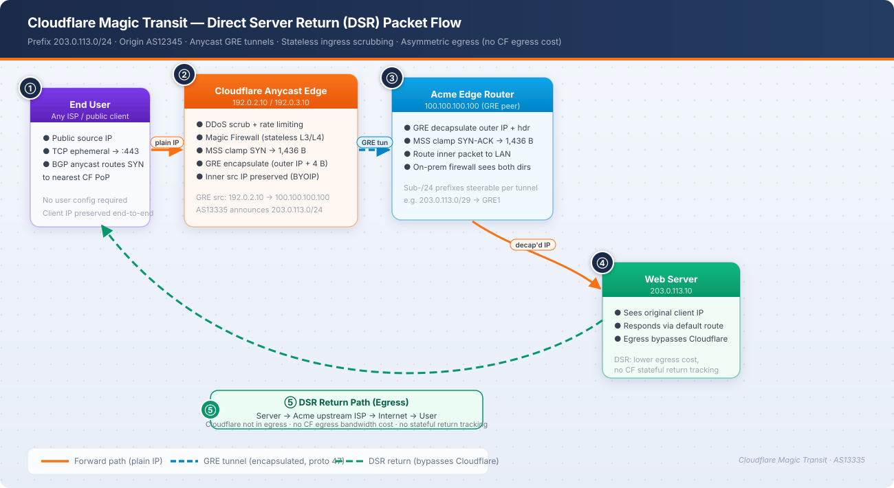
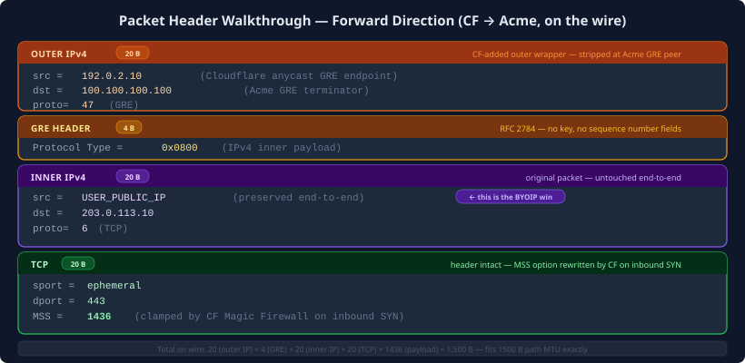

Section A: Magic Transit Onboarding
A.1 What information must Acme supply to Cloudflare to advertise the /24?
Cloudflare needs proof that Acme owns the route and can let Cloudflare announce it. I would provide:
- LOA: signed letter saying Cloudflare can announce
203.0.113.0/24for Acme. (Cloudflare BYOIP LOA) - RPKI ROA:
203.0.113.0/24, originAS12345, maxLength24. (Magic Transit advertise prefixes) - IRR route object:
route: 203.0.113.0/24,origin: AS12345. (Magic Transit advertise prefixes) - Proof and contacts: ASN ownership, WHOIS/NetRange info, and abuse/NOC contact. (Magic Transit advertise prefixes; Data Center Protection pre-flight checks)
The main thing is that LOA, IRR, and RPKI all need to match.
A.2 External entities that need to be informed
I would update or notify:
- IRR and RPKI: make sure route objects and ROA match
AS12345. (Magic Transit advertise prefixes) - Current transit or DDoS provider: remove the old announcement during cutover.
- GeoIP vendors: keep the prefix mapped to the right location.
- PeeringDB: clean up old peering details if they are no longer true.
- Partners and customers: tell them the path may change, but source IPs should stay the same through GRE. (Magic Transit reference architecture; RFC 2784)
A.3 GRE encapsulation and packet size
GRE adds 24 bytes: 20 bytes for the outer IPv4 header and 4 bytes for GRE. With a 1500-byte path MTU, the inner MTU is 1476 bytes. (Magic Transit MTU/MSS; RFC 2784)
A.3.a MSS clamp value

1,436 bytes.
1500 path MTU
- 20 outer IPv4
- 4 GRE
- 20 inner IPv4
- 20 TCP
= 1436Cloudflare recommends 1436 for Magic Transit GRE. (Magic Transit MTU/MSS)
A.3.b Where to apply the clamp and why
Apply the clamp on Acme's edge router and GRE-facing interfaces.
Cloudflare can clamp the inbound SYN. In DSR, the SYN-ACK goes straight out from Acme and does not go back through Cloudflare. If Acme does not clamp that side, large TCP packets can still break. (Magic Transit reference architecture; Magic Transit MTU/MSS)
A.4 Can prefixes smaller than /24 be routed across the GRE tunnels?
Yes inside the tunnels. No on the public Internet.
The public announcement needs to stay /24. Inside Cloudflare's overlay, smaller blocks like 203.0.113.0/29 and 203.0.113.8/29 can be mapped to different tunnels. (Magic Transit advertise prefixes; Magic Transit traffic steering)
A.5 Asymmetric routing and on-prem firewall migration
DSR means Cloudflare sees inbound traffic only. Return traffic leaves Acme directly. So I would not copy stateful on-prem rules 1:1 into Cloudflare. (Magic Transit reference architecture; Network Firewall Magic Transit egress; Network Firewall traffic types)
I would move only simple L3/L4 allows to Cloudflare, like web-vip:443/TCP or mail-vip:25/TCP. Anything that needs full stateful inspection should stay on-prem, unless Acme changes to a symmetric design.
A.6 Detailed packet flow diagram
Basic packet flow for a user going to 203.0.113.10 on TCP/443:
Forward path:
User -> Cloudflare anycast PoP -> GRE tunnel -> Acme edge -> Web server
Return path:
Web server -> Acme ISP/default route -> User

Outer IP: src=Cloudflare GRE endpoint, dst=100.100.100.100, proto=47
GRE: 4 bytes
Inner IP: src=USER_PUBLIC_IP, dst=203.0.113.10
TCP: dport=443, MSS=1436Main point: Cloudflare receives and cleans the packet, sends it to Acme over GRE, and Acme sends return traffic straight back to the user. The server still sees the real client IP. (Magic Transit reference architecture; GRE and IPsec tunnels; Tunnel health checks)
Section B: Firewall Debugging
B.1 Does the firewall allow all DNS queries?
No, not all DNS.
Rule 2 only covers UDP/53. It misses:
- TCP/53: large DNS replies and zone transfers. (RFC 7766)
- DNS-over-TLS: TCP/853. (RFC 7858)
- DNS-over-HTTPS: TCP/443. This works only because Rule 1 allows TCP/443, not because DNS was handled on purpose. (RFC 8484)
Fix:
Rule 2a: ANY -> 203.0.113.0/24, UDP, dport=53, ALLOW
Rule 2b: ANY -> 203.0.113.0/24, TCP, dport=53, ALLOWAdd TCP/853 too if Acme supports DoT.
B.2 Will the firewall allow pings?
No.
Rule 4 allows ICMP, but only up to 56 bytes total IP length. Normal Linux/macOS ping is 84 bytes total, and Windows is 60 bytes total. Both are too big, so they get denied. (Network Firewall fields)
Fix: raise the max IP packet length to 1476.
B.3 Is TFTP available on 203.0.113.8?
No.
TFTP uses UDP/69. Rule 5 only covers 203.0.113.0/29, which is .0 through .7. 203.0.113.8 is outside that range, so it hits Rule 6 deny.
Fix: if only .8 needs TFTP:
203.0.113.8/32, UDP, dport=69, ALLOWIf the whole .0 to .15 range should work, change the rule to 203.0.113.0/28.
B.4 Application protocols supported
a. HTTP (TCP/80): NO. There is no TCP/80 rule.
b. HTTPS (TCP/443): YES. Rule 1 allows it.
c. HTTP/3 (QUIC, UDP/443): NO. HTTP/3 uses QUIC over UDP, and Rule 1 is TCP only. (RFC 9114)
Fix: add ANY -> ANY, UDP, dport=443, ALLOW.
Section C: What I Learned
BYOIP is mostly trust paperwork. LOA, IRR, and RPKI need to match, or the route can fail in weird ways. (Cloudflare BYOIP LOA; Magic Transit advertise prefixes)
DSR changes firewall thinking. Cloudflare sees ingress. Acme sends return traffic direct. So Cloudflare rules need to be simple L3/L4 rules, not full stateful firewall rules. (Magic Transit reference architecture; Network Firewall Magic Transit egress)
MSS clamping matters. The right number here is 1436. If the egress side is missed, TCP can look fine but still break on larger packets. (Magic Transit MTU/MSS)
The prompt mixes stateful firewall logic with DSR. I answered the firewall section using the prompt's stateful assumption, but in a real Magic Transit DSR setup I would keep stateful checks on-prem.
Cutover order matters. I would validate LOA, IRR, RPKI, MSS, and tunnel health before moving traffic. (Magic Transit advertise prefixes; Data Center Protection pre-flight checks; Tunnel health checks)
References
- BYOIP - Letter of Agency: Cloudflare BYOIP LOA
- Magic Transit - Advertise prefixes: Cloudflare Magic Transit advertise prefixes
- Magic Transit - MTU and MSS reference: Cloudflare Magic Transit MTU/MSS
- Magic Transit - Traffic steering and prefix mapping: Cloudflare Magic Transit traffic steering
- Magic Transit - Tunnel health checks: Cloudflare Magic Transit tunnel health checks
- Magic Transit - GRE and IPsec tunnels: Cloudflare Magic Transit GRE and IPsec tunnels
- Reference Architecture - Magic Transit: Cloudflare Magic Transit reference architecture
- Data Center Protection - Pre-flight checks: Cloudflare Data Center Protection pre-flight checks
- Cloudflare Network Firewall - Magic Transit egress: Network Firewall Magic Transit egress
- Cloudflare Network Firewall - Traffic types: Network Firewall traffic types
- Cloudflare Network Firewall - Fields: Network Firewall fields
- IETF - RFC 2784: Generic Routing Encapsulation (GRE)
- IETF - RFC 7766: DNS Transport over TCP
- IETF - RFC 7858: DNS over TLS
- IETF - RFC 8484: DNS Queries over HTTPS
- IETF - RFC 9114: HTTP/3